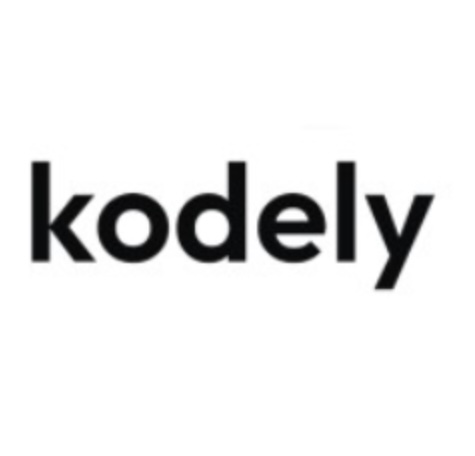
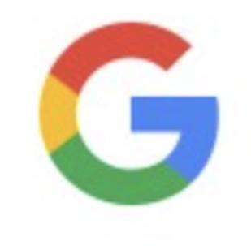

Projects
-
FlowState
Interview preparation tool that uses your uploaded resume to create AI talking points and scripts — so you feel more prepared and sound confident during interviews.
check it out -
College Events Portal
Led a team of software engineers to create the first-ever college club events portal for Hunter College.
check it out -
Ramadan Wordle
A Wordle game that generates new rounds with Ramadan-themed words on a daily basis for all 30 days of Ramadan.
check it out -
Iqra
Islamic-themed Chrome extension that sets a new Quran backdrop on every new tab. Published and available on the Chrome Web Store.
check it out -
WordSpeed
AI platform for businesses and social media influencers to build ebooks faster and at a fraction of the cost.
check it out -
Lense
Full-stack web/mobile app for college students with virtual study rooms and a community page for sharing flashcards and study resources.
check it out -
Habit Aware
Full-stack web app using MediaPipe and OpenCV for real-time detection of desktop habits like nail biting. Recognized by Bloomberg, Meta, and Book of the Month.
check it out -
Fast Food Ball Game
3D physics-based game built in Unity and C#, with object collisions, real-time input handling, and a WebGL build for cross-platform browser play.
check it out
Work Experience
-
Associate MongoDB Node.js Developer
Present
- Built Node.js CRUD endpoints with the MongoDB driver to streamline backend data workflows, improving full-stack responsiveness through optimized indexing and clean API design.
- Designed and managed MongoDB data models using schema best practices (embedding vs referencing, document structure, BSON types) for scalability and consistent performance across high-read/write workloads.
- Integrated MongoDB Atlas features such as aggregation pipelines, connection pooling, and secure environment configs to deliver more reliable full-stack functionality.
-

Software Engineer Instructor — Kodely
Jan 2025 – Present
- Designed and delivered comprehensive STEM lessons and hands-on assignments for K–12 students, covering programming and robotics.
- Improved students' practical skills in Python and JavaScript through project-based learning covering variables, loops, conditionals, and functions.
- Revamped curriculum structure to improve clarity and engagement, resulting in increased enrollment and measurable improvements in student proficiency.
-

Lead Software Engineer — Infosys × Google
Jan 2023 – Jun 2023
- Led project planning, app ideation, survey data collection, wireframing, and MVP development as Lead App Developer.
- Directed a team of 4 to design a Figma wireframe for a mental health and wellness app featuring journaling and meditation.
- Delivered the final product in SwiftUI/Xcode as a fully functional iOS app, winning honorable mention at the engineering expo.
-
Software Engineer TA
Jan 2023 – Jun 2025
- Led classroom instruction in JavaScript, the DOM, and core web development for cohorts of up to 25 students through project-based learning.
- Strengthened students' project skills for engineering competitions through mentorship across ideation, design, prototyping, and presentation phases.
- Provided one-on-one tutoring and code reviews to help students develop debugging skills and master foundational coding principles.